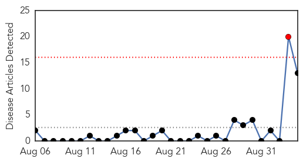
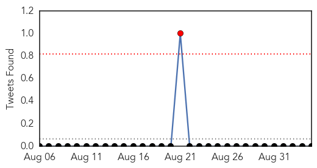
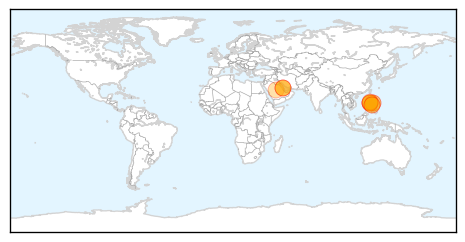
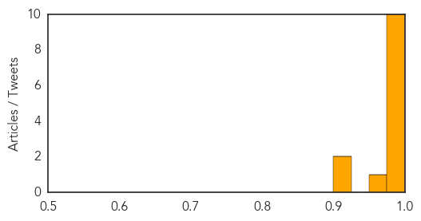

Influenza
30-Day Web Trend
0 alerts, 0 warnings

30-Day Twitter Trend
5 alerts, 0 warnings

Article Locations

Article Confidences

Top Articles:
- 0.965
- Flu Scan for Sep 04, 2014
- 0.956
- Get vaccinated now for flu season
- 0.949
- Flu vaccine protects mothers, babies
- 0.849
- High-Dose Flu Shot Benefits Older Patients, Study Finds
- 0.846
- Flu vaccinations already available in East Tennessee
- 0.739
- Flu shots effective in pregnant women, whether or not they are infected with HIV
- 0.644
- Flu vaccine supplier GSK says it can't fill all of its supply order
- 0.530
- GSK won't be able to supply 2 million doses of flu vaccine promised for 2014-15
Top Tweets:
-
No tweets found for Sep 04, 2014
MERS
30-Day Web Trend
1 alerts, 0 warnings

30-Day Twitter Trend
1 alerts, 0 warnings

Article Locations
Article Confidences
Top Articles:
- 0.997
- Editorial: Prevention is better than cure
- 0.995
- Filipino nurse tests negative for MERS
- 0.994
- DOH: Nurse with MERS-Cov, husband under tight watch
- 0.991
- Filipino nurse from Saudi Arabia positive for MERS
- 0.989
- Filipino nurse from Saudi Arabia positive for MERS-Cov; isolated at Davao City hospital
- 0.988
- Filipina nurse positive of MERS-CoV isolated at SPMC in Davao City
- 0.987
- Filipino nurse from Saudi Arabia positive for Mers
- 0.984
- Family member of nurse from Saudi isolated for possible MERS-CoV infection
- 0.983
- Niece of Pinay nurse with Mers-Cov to undergo self-quarantine
- 0.983
- Suspect MERS case in SouthCot sent to Davao for isolation, testing
- 0.973
- 3rd person monitored for possible MERS-CoV
- 0.922
- Philippine Embassy issues advisory on MERS-CoV
- 0.904
- DOH tells airlines companies: Include contact numbers in booking flights
Top Tweets:
-
No tweets found for Sep 04, 2014